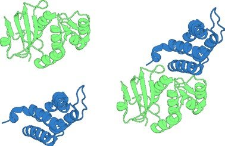
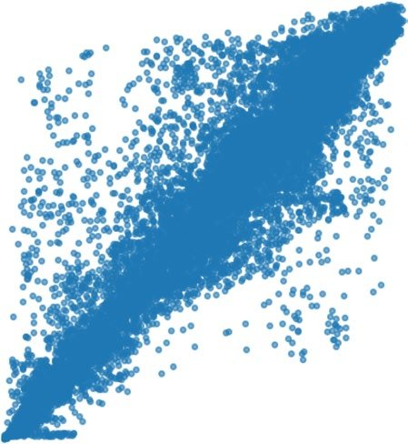
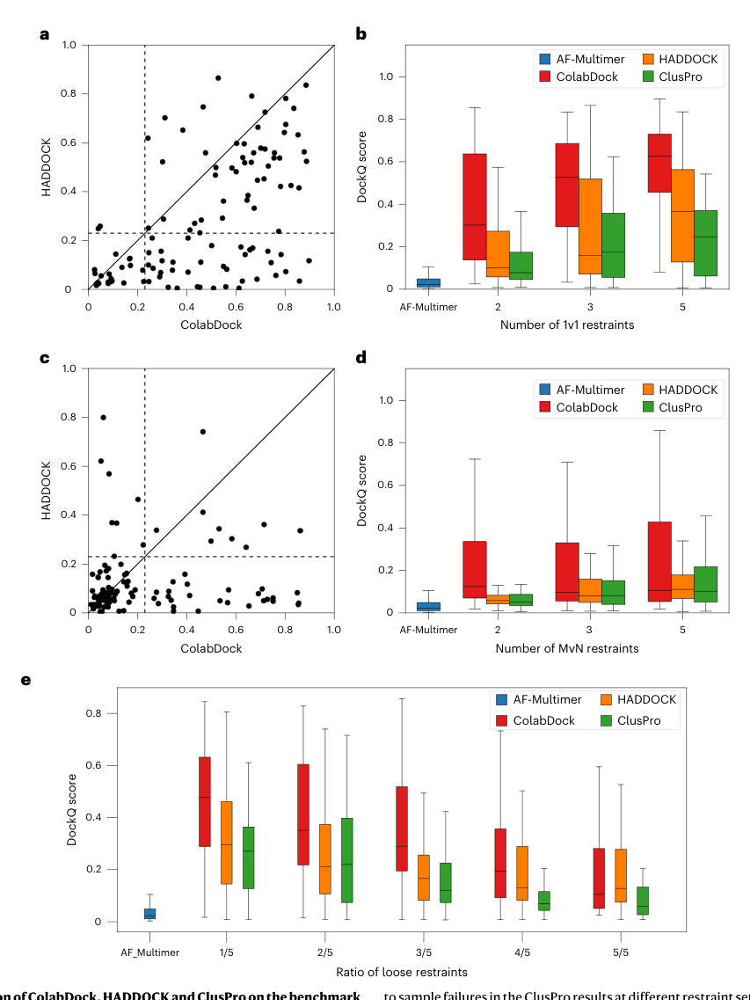
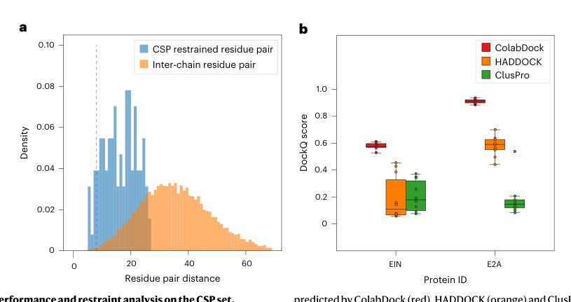
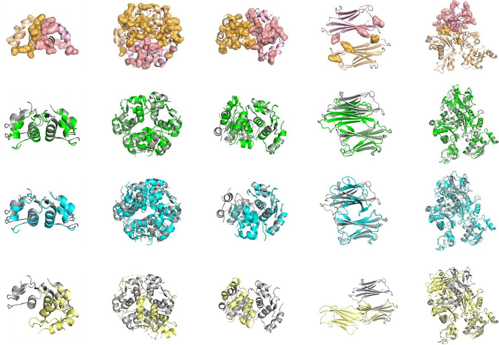
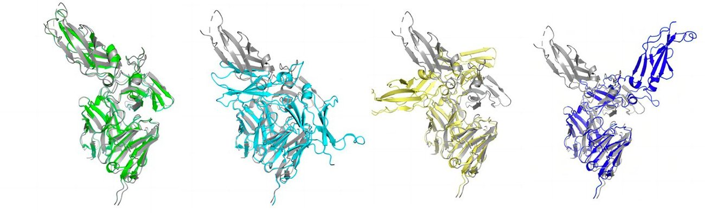

Integrated structure prediction of protein-protein docking with experimental restraints using ColabDock
Introduction
Protein complex structure prediction plays important roles in various applications, such as drug discovery and antibody design. However, due to limited prediction accuracy, there are frequent inconsistencies between the predictions and the experiments. Here we present ColabDock, a general framework adapting deep learning structure prediction models to integrate experimental restraints of different forms and sources without further large-scale retraining or fine tuning. With a generation-prediction architecture and trained ranking model, ColabDock outperforms HADDOCK and ClusPro using AlphaFold2 as the structure prediction model, not only in complex structure predictions with simulated residue and surface restraints but also in those assisted by nuclear magnetic resonance chemical shift perturbation as well as covalent labelling. It also assists antibody-antigen interface prediction with emulated interface scan restraints, which could be obtained by experiments such as deep mutational scanning. As a unified framework, we hope that ColabDock can help to bridge the gap between experimental and computational protein science.
Proteins are essential components in biological processes and mostly execute their functions through interactions with other molecules. Understanding the structure of protein complexes is fundamental for biological mechanism comprehension and structure-based drug discovery. Several methods are available for experimentally determining the complex structure, including x-ray crystallography, nuclear magnetic resonance (NMR) spectroscopy and cryo-electron microscopy. Although widely used in the field of structural biology, these methods have their own limitations and are sometimes costly or time consuming, which necessitates efficient computational methods.
Protein-protein docking is one of the most important problems in computational biology [1][2][3][4][5][6] . Given the individual structures of each component in the protein complex, a typical free-docking method generates a large number of complex conformations using a fast Fourier transform-based algorithm and evaluates the conformations with a customized scoring function. Various algorithms have been developed, such as ZDOCK 7 , pyDock 8 , SwarmDock 9 , HADDOCK 10,11 and ClusPro [12][13][14] . Despite the achieved success, free-docking methods suffer from the moderate accuracy of the scoring functions 15 . To alleviate this problem, one solution is to incorporate restraints derived from experimental methods. These experimental restraints provide crucial information about the complex interface and in many cases can be obtained relatively easily and at low cost. For example, chemical cross-linking provides the distance between two residues cross-linked by fixed-length reagents, whereas nuclear overhauser effect in NMR measures distances between atom pairs. To incorporate the experimental restraints, many docking algorithms have been developed. HADDOCK 10,11 allows users to define the active and passive residues in the complex. The active and passive residues are then converted into the form of ambiguous interaction restraints, which serve as an energy term in optimization and conformation ranking. ZDOCK 7 utilizes contacting residues to filter docking conformations. pyDOCK 8 adopts a similar a posteriori strategy, employing the percentage of satisfied restraints as a pseudo-energy term in the scoring function. ClusPro [12][13][14] generates a feasible translation set for each restraint and selects translations of high frequency from the intersection set.
On the other hand, multiple deep neural network-based models have been proposed for ab initio protein structure prediction, such as AlphaFold2 (AF2) 16 , AlphaFold-Multimer (AF-Multimer) 17 and RoseTTA-Fold2 (ref. 18). It has been shown that AF2 has learned an approximate biophysical energy landscape from massive protein structure data and achieves state-of-the-art performance in protein model quality estimation 19 . Besides, AF2 has also been used in protein design by either Monte Carlo Markov chain optimization [20][21][22] or by gradient backpropagation 23 . However, due to limited prediction accuracy 24,25 , sometimes there are still inconsistencies between the experimental observations and model predictions, especially for flexible protein-protein interactions.
Here, we present ColabDock, a general framework for protein-protein docking guided by sparse experimental restraints. Through gradient backpropagation, this method efficiently integrates the prior of the experimental restraints and the energy landscape of data-driven protein structure prediction models to automatically search for conformations satisfying both, meanwhile tolerating the conflicts or the vagueness in the restraints. ColabDock can take advantages of experimental restraints of different forms and sources, without further large-scale retraining or fine tuning. The framework contains two stages: the generation stage and the prediction stage. In the generation stage, ColabDock optimizes the input sequence profile in the logit space, to guide the structure prediction model to generate a complex structure in accordance with the given experimental restraints and templates while maximizing pLDDT and pAE measures. In the prediction stage, the
Results
Monomer distogram
The validation of ColabDock is performed on 111 proteins derived from the protein docking benchmark 5.5 dataset (Methods). For each protein complex, we randomly generate two, three or five 1v1 restraints to simulate the XL-MS experiment. The evaluation is made on the basis of the maximal DockQs of the 'top1', 'top5' and 'top10' ranking structures elected by the proposed ranking algorithm (Methods), as well as the maximal DockQ of all the predicted structures. Among the 111 generated samples, the maximal DockQs of 108 samples are above 0.23, a commonly used DockQ threshold of acceptable quality. For top1 and top10 structures, the numbers of successful predictions are 101 and 107, respectively (Supplementary Table 1). Given only two 1v1 restraints, the maximal DockQs of 81.08% protein complexes are above 0.23 (Fig. 2a), which is quite impressive since the structural information from restraints is relatively insufficient. When three or five restraints are provided, the success rates are both close to 100%. The restraint satisfaction rates of protein complexes with two, three and five restraint pairs are 0.55, 0.77 and 0.80, respectively (Fig. 2b). In cases like complexes with Protein Data Bank (PDB) entry IDs of 1DQ J and 1FQ J, where restraints are satisfied by various conformations, the ranking algorithm is able to select the ones with correct interface structures (Supplementary Fig. 2). These results indicate that ColabDock is able to efficiently make use of the provided restraints to obtain complex structures of high quality.


To assess the performance of ColabDock on the MvN restraints, we further generate MvN samples on the basis of the 1v1 samples described above (Methods). These samples are more challenging due to the vagueness of the MvN restraints since multiple 1v1 restraint combinations may satisfy the same set of MvN restraints. As are shown in Supplementary Table 1 and Fig. 2c, for 100 out of the 111 samples, the maximal DockQs of the predicted structures are above 0.23. For 75 samples, the DockQs of the top1 structures are above 0.23. The average DockQ and the root mean square deviation (r.m.s.d.) of top1 structures are 0.443 and 5.53 Å, respectively. When restraint number increases, the accuracy of ColabDock also increases and the success rate for top1 structures rises from 62.16% (two restraints) to 70.27% (three restraints and five restraints). The restraints are satisfied in the prediction structures in a similar percentage to that in the experimental structures (Fig. 2d and Supplementary Fig. 3). These results demonstrate that ColabDock can also efficiently utilize vague restraints to improve structure prediction.

To evaluate the necessity of the prediction stage in ColabDock, in experiments on 1v1 and MvN restraints described above we collect the structures derived from the last ten optimization steps, by which most optimization has reached convergence. In cases where the DockQ difference between the generation and prediction stages is large (here defined as larger than 0.1), the prediction stage achieves better performance on 69.9% complexes with 1v1 restraints (Fig. 2e). On MvN restraints, the percentage is 68.8% (Fig. 2f). These results suggest that the energy landscape of AF2 can help to refine the conformation derived from the generation stage and improve the prediction accuracy.
ColabDock outperforms other restrained docking methods
To compare ColabDock with traditional restrained docking methods, we construct an independent benchmark set containing 37 protein complexes (Methods). Modern structure prediction models such as AF-Multimer provide rapid and accurate predictions in many instances. In practice, when AF-Multimer predictions show good performances and are in good compliance with restraints, these prediction results are likely to be adopted by users directly. However, these models may fail to produce reliable predictions in some essential cases such as the antibody-antigen interactions. We, therefore, mainly focus on the failed cases. AF-Multimer does not perform well on this benchmark dataset, with DockQs of the predicted structures below 0.23. Two representative restrained docking methods are adopted to compare with ColabDock, that is, HADDOCK and ClusPro. Both methods performed excellently in the Critical Assessment of Prediction of Interactions. We followed default settings for HADDOCK 2.4 and ClusPro 2.0.0 with minor adjustment (see Supplementary Information for details). For targets with lengths above 700 residues, we use segment-based optimization in ColabDock to avoid out of memory issues.
For each complex in the benchmark set, we sample two, three and five 1v1 restraints to guide docking, resulting in 111 samples. ColabDock outperforms HADDOCK and ClusPro on most of the samples (Fig. 3a, Supplementary Table 2 and Supplementary Fig. 4a). The mean DockQ of ColabDock is 0.477, while those of HADDOCK and ClusPro are 0.287 and 0.191, respectively. The mean r.m.s.d. of ColabDock is 5.00 Å, also better than those of HADDOCK (7.16 Å) and ClusPro (8.99 Å). It is notable that ColabDock achieves the best performance among the three methods, regardless of the number of 1v1 restraints (Fig. 3b). Even with only two restraints, 23 out of 37 ColabDock predictions reach at least acceptable quality, while the numbers for HADDOCK and ClusPro are 14 and 7, respectively. These results suggest that ColabDock has the potential to generate reliable structures with sparse restraints, which is consistent with the observations on the validation set.

To further evaluate the performance on the interface level restraints, as the validation dataset, we convert the 1v1 restraints described above to MvN restraints. Since ClusPro fails to give predictions on 7 out of the 111 samples, we exclude them and make comparisons on the remaining 104 samples. Compared with the performance on 1v1 restraints, the performances of ColabDock, HADDOCK and ClusPro on MvN restraints decline at different degrees, due to the ambiguity of the MvN restraints. Despite this, ColabDock still outperforms the other two methods (Fig. 3c, Supplementary Table 2 and Supplementary Fig. 4b). The mean DockQ of ColabDock is 0.235, higher than those of HADDOCK and ClusPro, which are 0.132 and 0.114, respectively. In terms of mean r.m.s.d., ColabDock achieves 8.97 Å, while HADDOCK and ClusPro are 10.45 Å and 11.37 Å. Among the 104 samples, ColabDock predicts acceptable structures for 35 samples, which is two to three times more than HADDOCK (17) and ClusPro (13). Again, ColabDock achieves the best performance on DockQ, regardless of the number of MvN restraints (Fig. 3d).
To illustrate the transferability of ColabDock framework to other deep learning models, we implement the framework on AF-Multimer and refer to the model as ColabDock-Multimer. The mean DockQ for ColabDock-Multimer with 1v1 and MvN restraints are 0.434 and 0.225, respectively (Supplementary Fig. 5). In contrast, the performance of the original AF-Multimer is notably lower at 0.041. This method comparison with the same base model demonstrates a substantial improvement with the ColabDock framework when restraints are used in the modelling process.

It is common that experimentally derived restraints contain residues fractionally far away from each other, which we refer to as 'loose restraints'. To test the model performance for related tasks, we intentionally include loose restraints at the distance range from 8 Å to 20 Å. For each of the complexes in the benchmark set, the number of loose restraints varies from one to five, while the number of total restraints is fixed at five, resulting in 185 samples. We exclude 9 samples on which ClusPro fail and evaluate the three methods on the remaining 176 samples. As illustrated, ColabDock shows the best performance, yielding a mean DockQ of 0.344 and a mean alpha carbon atom r.m.s.d (Cα-r.m.s.d.) of 6.55 Å (Fig. 3e, Supplementary Fig. 4e,f and Supplementary Table 2). Even when three out of five restraints are loose ones, ColabDock still reaches a mean DockQ of 0.363, while those of HAD-DOCK and ClusPro reduce to 0.211 and 0.172, respectively. Meanwhile, with the number of looser restraints decreasing, the performance of ColabDock shows a substantial improvement compared with that of HADDOCK and ClusPro. These results indicate that ColabDock relies weakly on the quality of restraints. When integrated with restraints of high quality, ColabDock can predict more accurate structures than the other two methods. comparisons on structures derived from the generation and prediction stage in ColabDock, with 1v1 restraints (e) and MvN restraints (f). The data points above the upper yellow line mean that the DockQs of the prediction stage are at least 0.1 larger than that of the generation stage and vice versa. The red dashed lines denote the DockQ of 0.23 in each subfigure. The box plots in a and c are defined by the median as the centre line, first and third quartiles as the box edges and 1.5 times the interquartile range as the whiskers. in the restraints and that of all inter-chain residue pairs. A higher KL divergence indicates larger distribution difference and more informative restraints. KL divergences of EIN and E2A are 1.83 and 2.20, respectively (Supplementary Table 3). Their corresponding distributions are illustrated in Fig. 4a and Supplementary Fig. 6a. These statistics demonstrate the high quality of NMR restraints. On both samples, the predicted structures of ColabDock exhibit high accuracy. The DockQs reach 0.603 and 0.936, respectively, much higher than those of HADDOCK (EIN: 0.385 and E2A: 0.411) and ClusPro (EIN: 0.347 and E2A: 0.131) (Supplementary Table 3). The top5 and top10 ranking structures from ColabDock also exceed those of HADDOCK and ClusPro on both DockQ and Cα-r.m.s.d. (Supplementary Table 3 and Supplementary Fig. 7a). Besides, the low variance in DockQ of the top10 structures predicted by ColabDock indicates the steady performance when restraints of high quality are provided (Fig. 4b).

Performance on varied CL restraints
CL can be used to label the side chain of residues with reagents. Residues with a substantial modification ratio change are more likely to locate on the interface. CL restraints also belong to MvN restraints but typically possess a wider distance range than CSP restraints. Thus, the KL divergences of CL restraints are in general lower than those of CSP restraints (Supplementary Table 4 and Supplementary Fig. 6).
The CL dataset consists of five samples 26 (Methods), on most of which ColabDock surpasses HADDOCK and ClusPro (Fig. 5a and Supplementary Table 4). On the top1 ranking structure, the mean Cα-r.m.s.d. of ColabDock is 2.56 Å, while those of HADDOCK and ClusPro are 5.04 Å and 13.67 Å, respectively. Additionally, ColabDock achieves the maximum number of correct predictions (DockQ ≥0.23) across all the top rankings.
On samples with CL restraints of high quality such as 4INS4 and 4INS12 (Fig. 5b,c), as observed on the CSP dataset, ColabDock achieves steady accurate performance. For example, on the top10 ranking structures of 4INS4 predicted by ColabDock, the variances of DockQs and r.m.s.d. are less than those of HADDOCK (9.30 × 10 -5 versus 7.8 × 10 -2 on DockQ and 1.16 × 10 -3 versus 7.04 on r.m.s.d.) (Fig. 5a,b and Supplementary Figs. 6b and 7b). Meanwhile, on samples with restraints of lower quality, the performance of ColabDock is still satisfying. For example, the experimental restraints in 4INS8 are not primarily distributed on the interface (Fig. 5d). The distances of restraints in 2F8O are larger than 10 Å (Fig. 5e and Supplementary Fig. 6e). For these two cases, ColabDock predicts reasonable structures, while HADDOCK and ClusPro produce incorrect conformations.
Sample 1YAG is a special case, where seven residues in chain A are known to be in contact with chain B (Fig. 5f, coloured bright orange), but no other information about the contacting residues in chain B is provided. To deal with such a situation, residues in chain B with solvent accessibility larger than 40% are extracted according to FreeSASA 27 as potential contacting residues (Fig. 5f, coloured salmon, and Supplementary Fig. 6f). As shown in Fig. 5a, both ColabDock and HADDOCK can produce structures of satisfying quality. However, ColabDock predicts structures that are more consistent with the experimental restraints than the other two methods. The DockQ of the top1 ranking structure predicted by ColabDock is 0.710, while that of HADDOCK is 0.318. As for ClusPro, although a structure of DockQ 0.769 is generated in computation, it fails to rank this structure as the top one (Supplementary Table 4). Additionally, the r.m.s.d. of the top1 structure of ColabDock (1.47 Å) is lower than that of ClusPro (1.73 Å).
Structure prediction for antibody-antigen complexes
Antibody-antigen complex modelling has been a long-standing challenge [28][29][30][31][32] because of the flexibility of the complementarity-determining regions (CDRs) and the lack of co-evolution signal. DMS is a commonly used technique determining residues that are likely to participate in the antibody-antigen binding. Here, we establish an antibody-antigen benchmark set of 45 complexes to simulate restraints derived from DMS by sampling residues on the interface (Methods). It should be noted that the DockQs of AF-Multimer predictions are all below 0.23 on these complexes. For each complex, we sample three different sets of interface restraints, altogether resulting in 135 samples. ClusPro fails in four samples, and for fairness, we exclude these samples for all three methods in evaluation.
A total of 21 of the 43 successful ColabDock samples are of at least medium quality. In contrast, for HADDOCK and ClusPro, the numbers are 11 and 6, respectively.
As shown in Supplementary Table 5, ColabDock outperforms HADDOCK and ClusPro, with a mean DockQ equal to 0.223 and a mean r.m.s.d. equal to 9.57 Å (Fig. 6a, Supplementary Table 5 and Supplementary Fig. 8a,b). For ColabDock, out of the 131 samples, the top1 ranking structures of 43 samples reach at least acceptable quality, while for HADDOCK and ClusPro, the numbers are 32 and 28, respectively. As for the number of samples with DockQ larger than 0.49, ColabDock also surpasses HADDOCK and ClusPro (Fig. 6b). In this study, we take 1AHW as an example: 1AHW is a human tissue factor-antibody(5G9) complex, participating in the process of blood coagulation protease cascade. We randomly sample five interface residues (His91 and Gly92 for the light chain and Asp31, Tyr32 and Asn100 for the heavy chain) from the antibody and seven interface residues (Lys165, Thr167, Val192, Thr197, Val198, Asn199 and Asp204) from the antigen (Fig. 6c). These sampled residues in the antibody are mainly distributed on L1 CDR, H1 CDR and H3 CDR regions. The sampled residues in the antigen are very close to the crucial residues (Tyr156, Tyr157, Lys165, Lys166, Lys169, Arg200 and Lys201) revealed by the previous mutation assay 33 . Both the predicted structure of AF-Multimer and those of three docking methods are shown in Fig. 6d. As is seen in Fig. 6, ColabDock captures most of the native contacts on the interface, with DockQ of 0.770 and r.m.s.d. of 1.17 Å, while the predicted structures of the other methods largely differ from the native conformation. In the native structure, residue Thr197, Val198 and Asn199 in 5G9 are in contact with the H1 CDR region. But in the top1 structure of HADDOCK, these residues are close to the L1 CDR region. This structure satisfies 6 of 12 surface restraints and is evaluated as low-energy conformation by its score function. ClusPro only uses restraints in the structure filtering process instead of structure sampling. In its top1 ranking structure, ClusPro places Thr197, Val198 and Asn199 in 5G9 close to Asp31, Tyr32 (H1 CDR) and Asn100 (H3 CDR). This case study indicates that ColabDock outperforms the other two methods in terms of both conformation exploration and conformation ranking.
Chain templates
Losses input templates through optimizing the input sequence profile in the logits space. In the prediction stage, the generated structure along with the input templates are fed into AF2 to make the final prediction.
Validating ColabDock performance on simulated restraints
In addition, we collect all the complexes from the benchmark 5.5 dataset, which are released after the AF-Multimer training set construction date (30 April 2018) to form an unbiased dataset. All of the eight samples from the unbiased dataset are antibody-antigen complexes (Supplementary Table 6). As shown in Fig. 6e, the mean DockQ scores are 0.311 for AF-Multimer, 0.365 for ColabDock, 0.239 for HADDOCK and 0.165 for ClusPro, respectively. the overall ColabDock performance with various types of restraints is comparable to or better than that of AF-Multimer, even though no multiple sequence alignment (MSA) is used in ColabDock. These results underscore ColabDock's stable performance on an unbiased dataset. protein 4INS4 (b), 4INS12 (c), 4INS8 (d), 2F8O (e) and 1YAG (f). For b, the two chains are coloured in orange and pink, and CL restraints are coloured in bright orange and salmon, respectively. The top1 structures are predicted by ColabDock (green), HADDOCK (cyan) and ClusPro (yellow). The native structure is coloured in grey in the latter three subfigures. The native and predicted three-dimensional structures for c-f follow the same colour and order as in 4INS4.
Discussion
Protein docking provides crucial structure information to understand biological mechanisms. Despite the rapid development of deep models in protein structure prediction, most models make predictions in a free-docking way, which can potentially result in inconsistency between the experimental restraints and the predicted structure. To tackle this problem, in this study, we propose a general framework ColabDock for restrained complex conformation prediction. It incorporates the experimental restraints into the energy landscape of deep models through gradient backpropagation, without further large-scale retraining or fine tuning. ColabDock can take advantage of experimental restraints of different forms and sources and produce structures that optimally satisfy the restraints, with a high tolerance of the conflicts or vagueness in the restraints.
As a proof of concept, we adopt AF2 as the structure prediction model in ColabDock. However, it can also be applied to any data-driven deep learning models, such as RoseTTAFold2 (ref. 18) and AF-Multimer 17 . The ColabDock-Multimer performs comparably to the original ColabDock on both 1v1 and MvN restraints on the benchmark dataset and shows steady improvement over the original AF-Multimer (Supplementary Fig. 5). This not only demonstrates the transferability of ColabDock framework but also provides an alternative docking solution free to choose for researchers. For now, the ColabDock framework is only designed for restrained protein-protein docking. However, with the emergence of deep learning models for multiple molecule types [34][35][36] , we expect this framework to be expanded to more general purposes, such as protein-ligand docking and protein-RNA/ DNA docking. and AF-Multimer are aligned to the native structure for comparison. DockQ and r.m.s.d. are listed for each predicted structure. e, Performance comparison between AF-Multimer, ColabDock, HADDOCK and ClusPro on an unbiased dataset. The unbiased dataset consists of all protein complexes from the benchmark 5.5 dataset released after AF-Multimer training set (eight complexes in total). The sample sizes for the box plots representing AF-Multimer, ColabDock, HADDOCK and ClusPro are 8, 29, 29 and 29, respectively. Details of the samples are listed in Supplementary Table ColabDock is evaluated on two types of restraints, the 1v1 and MvN restraints. The former is on the residue-residue level, instances include restraints derived from XL-MS. The latter is on the interface level, related to NMR and CL experiments. The results on the synthetic datasets show ColabDock achieves satisfying performance. Besides, as expected, with the increase of the restraint number, the performance of ColabDock improves. Even with few restraints, ColabDock outperforms AF-Multimer on the benchmark dataset and the same framework setting with no restraints and converges to fewer conformations with more restraints provided, suggesting efficient application of added information (Supplementary Figs. 9 and 10). Compared with HADDOCK and ClusPro, ColabDock achieves prominent performance when the restraints are of high quality. On two experimental datasets, ColabDock still outperforms HADDOCK and ClusPro, regardless of the quantity and quality of the provided restraints. Lastly, we evaluated the performance of different docking methods on the antibody-antigen dataset. The proportion of medium or higher quality structures predicted by ColabDock is much higher than those of HADDOCK and ClusPro. This suggests the potential application of our model in antibody design. We wish to additionally note that, on an newly released unbiased dataset, ColabDock still shows comparable or better performance than AF-Multimer.
Methods
Datasets
Despite the success, ColabDock still has some limitations. For now, ColabDock can only accept restraints with distances below 22 Å, which is determined by the upper limit of the distogram in AF2. This limitation makes the model only suitable for a fraction of the XL-MS reagents. Without segment-based optimization, ColabDock can only handle complexes with less than 1,200 residues on the NVIDIA A100 Graphics Processing Unit (GPU), due to limited memory. Also, the method can be time consuming, especially for large protein complexes (Supplementary Fig. 11). The use of the bfloat16 floating-point format version of AF2 is expected to help save memory and accelerate the computation.
In this study, we constructed a synthetic dataset and an experimental dataset to evaluate the performance on the simulated and experimental restraints, respectively.
Synthetic dataset.
The synthetic dataset is curated from the protein docking benchmark 5.5 (ref. 37). This benchmark consists of 271 protein complexes, with functions including enzyme-inhibitor, enzyme-substrate and antibody-antigen, and each has experimentally resolved structure. After removing structures with resolution >3 Å, a synthetic dataset containing 241 protein structures is constructed. The synthetic dataset is further split into the benchmark set and the evaluation set. The former is used to compare the performance of ColabDock with HADDOCK and ClusPro. The latter is used to tune the hyperparameters and perform ablation studies. The details are provided as follows. More detailed sample information is listed in Supplementary Table 7.
The motivation of ColabDock is to incorporate experimental restraints into deep learning models to avoid inconsistency between experiment and prediction. Considering the overlap between protein docking benchmark 5.5 and the training set of AF-Multimer, from the synthetic dataset we retrieved protein complexes with DockQ less than 0.23 by AF-multimer prediction, resulting in 84 complexes. We further removed two protein complexes (not antibody-antigen complexes), since ColabDock cannot predict complexes with more than 1,200 residues under normal optimization. Among the final 82 complexes, 45 complexes are antibody-antigen complexes. We refer to the 45 antibody-antigen complexes as the antibody-antigen benchmark set and the remaining 37 complexes as the benchmark set.
Development set, validation set and segment set.
After the curation of the benchmark set, we first establish the development set by randomly sampling 30 proteins from the remaining 157 proteins. Then, from the remaining 127 proteins, 111 proteins with length below 700 are collected to compose the validation set. Meanwhile, we also retrieve proteins with length above 600 to build the segment set. The final segment set includes 29 proteins. It should be noticed that the validation set and the segment set have overlap.
Experimental datasets.
We construct two experimental datasets to evaluate the performance of the docking methods, that is, the CSP set and the CL set. CSP detects contact residues according to the change of chemical shifts upon binding to interacting proteins. CL labels the side chains of solvent accessible amino acids with reagents. Differences in modification ratio before and after the binding can reveal residues on the interface, which can be read out through mass spectrometry experiments.
The CSP set consists of two proteins (1GGR and 3EZA) collected from Dominguez 11 . The CL set contains three proteins (1YAG, 2F8O and 4INS) from Drake 26 . It should be noticed that protein 4INS has three biological assemblies, which consist of 4, 8 and 12 chains, respectively. Each biological assembly possesses a set of restraints. For the assembly with four chains, if chain A and B are regarded as a subunit, while chain C and D are regarded as another one, then the experimentally derived restraints are distributed between these two subunits. This assembly is denoted as 4INS_AB_CD. Similarly, the assemblies with 8 and 12 chains are denoted as 4INS_ABCD_EFGH and 4INS_ABCDEFGH_IJKL, respectively. For short, we call 4INS_AB_CD, 4INS_ABCD_EFGH and 4INS_ABCDEFGH_IJK as 4INS4, 4INS8, 4INS12 in this study, respectively (more details are listed in Supplementary Table 8).
Restraint sampling
We mainly focus on two types of restraints. One is the 1v1 restraint, in which the distance of a residue pair is below a certain threshold. Instances include the XL-MS data. The other is the MvN restraint. This defines two sets of residues located on the interaction surface with one set potentially in contact with the other, but the details are unknown. NMR CSP, paramagnetic relaxation enhancements, CL and DMS fall into the latter type. Additionally, considering the distances of some experimental restraints are above 8 Å, we add loose restraints to 1v1 restraints. For antibody-antigen complexes, we adopt a sampling strategy to generate more dispersed restraints. All types of restraints are sampled using python with Numpy package and are available at the Open Science Framework (OSF) data repository.
The 1v1 restraints are sampled from clustered residue pairs in contact. We first collect all the inter-chain residue pairs where the distances between the Cβ are below 8 Å. Then, hierarchical clustering analysis is performed on the basis of the residue index distance. If we denote the amino acid in the 12th position in chain A as 12A, then the restraint between 12A and 15B is denoted as 12A-15B. The residue index distance between restraints 12A-15B and 22A-16B can be calculated as (22 -12) + (16 -15), equal to 11. Finally, restraints are randomly picked from clusters as different as possible. In ColabDock analysis, we sampled two, three or five pairs of 1v1 restraints.
MvN restraints.
The MvN restraints are derived from the 1v1 restraints. Suppose two 1v1 restraints 12A-15B and 14A-25B are sampled, we expand each residue in the restraints by incorporating the four residues in the neighbourhood. For example, 12A is expanded to residues from 10A to 14A. Then we merge residues sampled in the same chain. In this way, for chain A, seven residues (10A-16A) are derived from the given Article 1v1 restraints, while for chain B ten residues (13B-17B and 23B-27B) are derived. The derived MvN restraint means two of the seven residues in chain A are in contact with at least one of the ten residues in chain B, but not all the seven residues in chain A are necessarily in contact with chain B and vice versa.
Loose restraints.
To evaluate performance of ColabDock on proteins containing restraints at longer distances, we additionally sample loose restraints. We first retrieve the inter-chain residue pairs with distances between 8 Å and 20 Å. Then, similar clustering, selection and expansion processes are performed as in the generation of the 1v1 restraints. These restraints are referred to as loose restraints.
Antibody interface restraints.
To mimic the DMS data of antibodyantigen complexes, for each chain we first select residues that are in contact with the other chains. Then, five to ten residues are randomly sampled from the selected residues in each chain to form the antibody interface restraints. Since most of the interacting residues on the antibody side are in the heavy and light chain variable regions (VH and VL, respectively), we crop the antibody to a feasible length while preserving both regions. For complexes with more than 1,200 residues, we also trim the antigen sequences to domains which are in direct contact with the antibody.
ColabDock framework
AF2 is a deep neural network developed to predict protein structures. It takes as input the protein sequence, structure template and MSA. The outputs of AF2 include the predicted atom coordinates, distogram, the predicted local-distance difference test (pLDDT) and the predicted aligned error (pAE). Assume the length of the protein is L, the distogram is an L × L × 64 matrix, where the vector of 64 elements on (i, j) indicates the distance distribution between the ith residue and the jth residue in the three-dimensional space. pLDDT and pAE are two quality measures with size of L and L × L, respectively. AF2 not only performs well on the protein structure prediction but also has been adopted in other tasks, such as protein design.
In this study, we develop the ColabDock framework, aiming to incorporate various types of experimental restraints into deep learning protein structure prediction models. As a proof of concept, we adopt AF2 as the structure prediction model in the framework to demonstrate the efficacy. To align with the standard AF2 experiment setup, we adopt the same checkpoint, version 2.2.0, as that has been used in AF2 inference in this work. As shown in Fig. 1, ColabDock is composed of two stages, that is, the generation stage and the prediction stage. In the generation stage, the model takes as input the protein sequence profile and the templates of each chain in the complex and generates a complex structure that is in accord with the provided restraints through gradient backpropagation. The protein sequence profile is the only trainable variable and leads to the change of the docking structure. It is in the real number field rather than in the one-hot format. This has been proven to accelerate optimization convergence 23 . It should be noted that, by updating only the sequence profile, the prediction protein sequence remains unchanged in both generation and prediction stages and are all the same as the input sequence. The index of the beginning residue is increased by 50 in each protein chain to minimize the impact of inter-chain positional encoding, as adopted in ColabFold 38 model. In the prediction stage, ColabDock predicts a complex structure on the basis of the generated structure and the templates of each chain. For each protein, ColabDock is performed multiple times and the ranking algorithm described below is used to sort all the predicted complex structures. For AF2 in ColabDock, the recycle number is set to 1. It should be noted that in ColabDock no MSA or extra MSA is used.
ColabDock adopts four types of losses in the generation stage, that is, the monomer distogram loss, the restraint loss, pLDDT loss and ipAE loss. The formats of these losses are as follows, with the monomer distogram loss defined as: where ichain is the index of protein chains in the complex. i, j and b are the indices of amino acids and bins in the distogram. y ichain i, j,b and p ichain i, j,b represent the one-hot encoded distance and the predicted distance probability, respectively. The restraint loss has similar format to the monomer distogram loss, as described below: where thres is the threshold of the restraints and dist b is the distance of the bin. For 1v1 restraints, the loss is calculated directly. For MvN restraints, we first sort along the N dimension and select the most probable interacting residue for each of the M residues. Then, we sort along the M dimension and select a specified number of interacting residue pairs to optimize. pLDDT and ipAE losses are defined as: where 𝕁𝕁 is a matrix in which the entity (i, j) is set to 0 if the ith residue and jth residue belong to the same chain and otherwise 1. The intrachain distogram loss guarantees the consistency between the predicted chain conformations and the input templates. The restraint loss brings close the residues in the provided restraints. pLDDT and ipAE make sure the predicted structure is of high quality. The final loss is the weighted sum of these four types of losses:
During optimization, the distance of the provided restraints is set to 8 Å by default. This value can be adjusted according to the types of the restraints. The learning rate is set to 0.1.
It should be noticed that, besides AF2, other deep learning-based prediction models such as AF-Multimer and RoseTTAFold2 can also be adopted into the ColabDock framework in a similar way. To demonstrate this, we also release the AF-Multimer version of Colab-Dock (named ColabDock-Multimer) in our code repository and provide the performance comparison in the Supplementary Fig. 5. In ColabDock-Multimer evaluation, to align with the AF-Multimer setup, we used the default settings with the AF-Multimer 2.2.0 checkpoint, the same as the AF-Multimer experiments.
Segment-based optimization. Since gradient backpropagation consumes a large amount of GPU memory, to handle large proteins, we propose the segment-based optimization protocol. Specifically, a set of residues is first cropped out from the whole sequence at the beginning of each backpropagation step. With 50% probability, the cropped residues contain provided restraints and the optimization loss includes all the four items described above. For the remaining 50% probability, the cropped residues are randomly chosen and the loss only contains L dgram , L pLDDT and L ipAE . During the optimization, only the profile of the cropped residues is updated. The remaining part stays unchanged. Our experiments show that for most proteins, setting the number of cropped residues to 200, and the optimization steps to 100 is enough to reach a convergent structure (Supplementary Fig. 12). We use this setting as the default setting.
Ranking algorithm . It is observed that the performance of ColabDock is largely influenced by the stochastics in initialization and optimization. To alleviate this, for each protein, ColabDock is run multiple times to generate diverse docking structures. Hereafter, we refer to the number of runs as a ‘round’. In each round, the number of backpropagations is referred to as a ‘step’. The predicted structures from all the rounds are sorted according to the proposed ranking algorithm.
The ranking algorithm is developed on the basis of the RankingSVM (RSVM) model 39 . It takes five types of features as input, including ipTM, contact number, contact pLDDT, number of satisfied restraints and average error. ipTM is the output of AF2, measuring the quality of the interface in the complex. Contact number is defined as the number of inter-chain residue pairs in the predicted structure, whose distances are below 8 Å. Contact pLDDT is the average pLDDT of the residues in contact. The number of satisfied restraints indicate whether the predicted complex structure is in accord with the provided restraints. Average error only considers the residue pairs in the provided restraints. The error is set to the excess if the distance of the residue pair is larger than 8 Å, otherwise 0.
We establish two RSVM models to sort the structures generated in each round and those selected from all the rounds, which are referred to as the intra-RSVM and the inter-RSVM, respectively. The RSVM models are trained on the development set. Training details are described in Supplementary Note 4. In practical application, intra-RSVM is first used to select the top5 structures in each round. Then, inter-RSVM is applied to rank all the selected structures.
Evaluation measures DockQ and r.m.s.d . To evaluate the general performance in struc - ture prediction, we mainly adopt two measures, that is, DockQ 40 and Cα-r.m.s.d. The former focuses on the quality of the interface, while the latter measures the global structural difference. Structures can be divided into four classes according to DockQ: incorrect (0 < DockQ < 0.23), acceptable (0.23 ≤ DockQ < 0.49), medium (0.49 ≤ DockQ < 0.80) and high (DockQ > 0.80). We regard complex structures with DockQ ≥0.23 as correct predictions. DockQ is calculated using the official code ( https://github.com/bjornwallner/DockQ ). r.m.s.d. is calculated with custom Python code.
Restraint satisfaction rate . We use the restraint satisfaction rate to evaluate the ability of restrained docking methods in utilizing restraint information. For 1v1 restraint, it is regarded as satisfied if the distance between the Cβ atoms of the corresponding residues in the predicted structure is less than 8 Å. Given m 1v1 restraints, if p restraints of them are satisfied, then the satisfaction rate is defined as p / m . For MvN restraint, suppose it is defined on an interface with m residues from one chain and n residues from another chain, then it is regarded as satisfied if the minimum distance between the Cβ atoms of the m residues and the Cβ atoms of the n residues is below 8 Å. In the predicted structure, out of the m residues, if the p residues are close to the n residues (distance below 8 Å), and out of the n residues, q residues are close to the m residues, then the satisfaction rate is defined as ( p + q )/( m + n ). It is worth noting that, according to the definition, the MvN satisfaction rate of the real structure can be lower than 100%.
Docking with NMR derived CSP restraints CSP is an NMR surface detection experiment. It does not directly identify interacting residue pairs but instead provides a range of residues located at the interface. The derived restraints, therefore, fall into the category of MvN restraints. We obtain two protein complex samples (EIN and E2A) with CSP experimental restraints from Dominguez 11 (Methods) to form the CSP set.Before comparison, we first evaluate the quality of the CSP restraints. Specifically, we calculate the Kullback-Leibler (KL) divergence between the distance distribution of residue pairs involved
6 .. The boxes in a and e are defined by the median as the centre line, first and third quartiles as the box edges and 1.5 times the interquartile range as the whiskers
References
- Corso G, Stärk H, Jing B, Barzilay R, Jaakkola T. Diffdock: diffusion steps, twists, and turns for molecular docking. 2023. doi:10.48550/arXiv.2210.01776
- Tsaban T. Harnessing protein folding neural networks for peptide-protein docking. Nat. Commun 2022
- Masters M, Mahmoud A, Wei Y, Lill M. Deep learning model for efficient protein-ligand docking with implicit side-chain flexibility. J. Chem. Inf. Model 2023
- Zheng W, Wuyun Q, Freddolino P, Zhang Y. Proteins: Structure, Function, and Bioinformatics 2023
- Peng Z, Wang W, Wei H, Li X, Yang J. Improved protein structure prediction with trRosettaX2, AlphaFold2, and optimized MSAs in CASP15. Proteins Struct. Funct. Bioinf 2023
- Wallner B. Improved multimer prediction using massive sampling with AlphaFold in CASP15. Proteins 2023
- Pierce B. ZDOCK server: interactive docking prediction of protein-protein complexes and symmetric multimers. Bioinformatics 2014
- Cheng T, Blundell -, Fernandez-Recio T. pyDock: electrostatics and desolvation for effective scoring of rigid-body protein-protein docking. Proteins 2007
- Torchala M, Moal I, Chaleil R, Fernandez-Recio J, Bates P. SwarmDock: a server for flexible protein-protein docking. Bioinformatics 2013
- De Vries S, Van Dijk M, Bonvin A. The HADDOCK web server for data-driven biomolecular docking. Nat. Protoc 2010
- Dominguez C, Boelens R, Bonvin A. HADDOCK: a protein-protein docking approach based on biochemical or biophysical information. J. Am. Chem. Soc 2003
- Comeau S, Gatchell D, Vajda S, Camacho C. ClusPro: a fully automated algorithm for protein-protein docking. Nucleic Acids Res 2004
- Comeau S, Gatchell D, Vajda S, Camacho C. ClusPro: an automated docking and discrimination method for the prediction of protein complexes. Bioinformatics 2004
- Kozakov D. The ClusPro web server for protein-protein docking. Nat. Protoc 2017
- Vajda S, Hall D, Kozakov D. Sampling and scoring: a marriage made in heaven: sampling and scoring. Proteins 2013
- Jumper J. Highly accurate protein structure prediction with AlphaFold. Nature 2021
- Evans R. 2022. doi:10.1101/2021.10.04.463034
- Baek M. Accurate prediction of protein structures and interactions using a three-track neural network. Science 2021
- Roney J, Ovchinnikov S. State-of-the-art estimation of protein model accuracy using AlphaFold. Phys. Rev. Lett 2022
- Jendrusch M, Korbel J, Sadiq S. 2021. doi:10.1101/2021.10.11.463937
- Moffat L, Kandathil S, Jones D. 2022. doi:10.1101/2022.01.27.478087
- Wicky B. Hallucinating symmetric protein assemblies. Science 2022
- Frank C. 2023. doi:10.1101/2023.02.24.529906
- Jiang W, Zheng S. Structural insights into galanin receptor signaling. Proc. Natl Acad. Sci. USA 2022
- Jin Z. Structure of a TOC-TIC supercomplex spanning two chloroplast envelope membranes. Cell 2022
- Drake Z, Seffernick J, Lindert S. Protein complex prediction using rosetta, alphafold, and mass spectrometry covalent labeling. Nat. Commun 2022
- Mitternacht S. FreeSASA: an open source C library for solvent accessible surface area calculations. F1000Res 2016
- Almagro, J. C. et al. Second antibody modeling assessment (AMA-II): 3D antibody modeling. Proteins 82 , 1553–1562 (2014)
- Anishchenko I, Kundrotas P, Vakser I. Modeling complexes of modeled proteins: modeling complexes of modeled proteins. Proteins 2017
- Ganea O. Independent SE(3)-equivariant models for end-to-end rigid protein docking. 2022. doi:10.48550/arXiv.2111.07786
- Yan Y, Tao H, He J, Huang S. The HDOCK server for integrated protein-protein docking. Nat. Protoc 2020
- Yin R, Feng B, Varshney A, Pierce B. Benchmarking AlphaFold for protein complex modeling reveals accuracy determinants. Protein Sci 2022
- Huang M. The mechanism of an inhibitory antibody on TF-initiated blood coagulation revealed by the crystal structures of human tissue factor, Fab 5G9 and TF•5G9 complex 1. J. Mol. Biol 1998
- Bryant P, Kelkar A, Guljas A, Clementi C, Noé F. Structure prediction of protein-ligand complexes from sequence information with Umol. Nat. Commun 2024
- Baek M. Accurate prediction of protein-nucleic acid complexes using RoseTTAFoldNA. Nat. Methods 2024
- Krishna R. Generalized biomolecular modeling and design with RoseTTAFold All-Atom. Science 2024
- Vreven T. Updates to the integrated protein-protein interaction benchmarks: docking benchmark version 5 and affinity benchmark version 2. J. Mol. Biol 2015
- Mirdita M. ColabFold: making protein folding accessible to all. Nat. Methods 2022
- Joachims T. Optimizing search engines using clickthrough data. 2002
- Basu S, Wallner B. DockQ: a quality measure for protein-protein docking models. PLoS ONE 2016
- Feng S. 2024. doi:10.17605/OSF.IO/N6R48
- Feng S. 2024. doi:10.5281/ZENODO.10467048